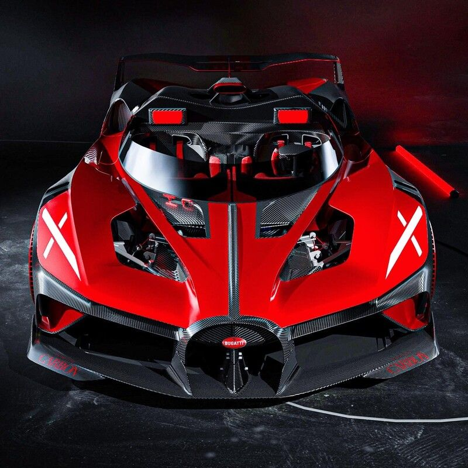

hello !
welcome to my next website !
Information about Bugatti

The Bugatti Bolide is a track-only sports car developed by Bugatti Engineering GmbH in Wolfsburg,
Germany and Bugatti Automobiles and manufactured in Molsheim,
by French automobile manufacturer Bugatti Automobiles S.A.S., revealed online on October 28, 2020.
Bugatti, the concept version of the Bolide is using the W16 engine with a weight-to-power-ratio of 0.91 kg/kW (0.67 kg/PS; 1.50 lb/hp).
announced the Bolide would be the last car ever made with their 8.0 liter W16 engine with four turbochargers.
The Bolide's name comes from the term le bolide, which literally means "the racing car" in French.
In April 2023, Bugatti revealed the production version of the Bolide as a track-only sports.
[3] 40 units are to be built and the first vehicles were delivered to customers at the beginning of 2024.
go to Bugatti-bolide
go to next Bugatti-bolide
go to the last one Bugatti-bolide
go to the first website